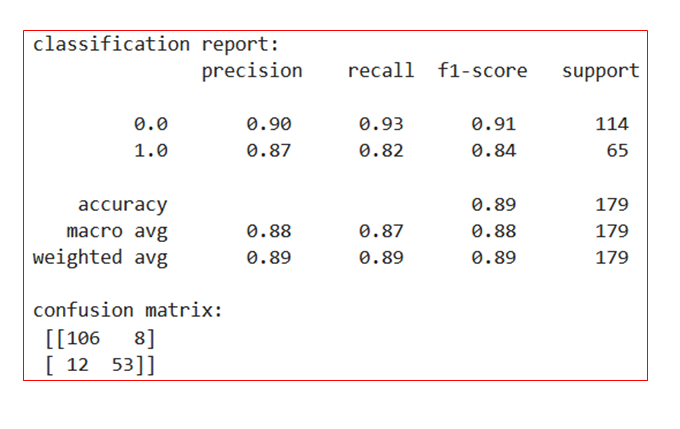
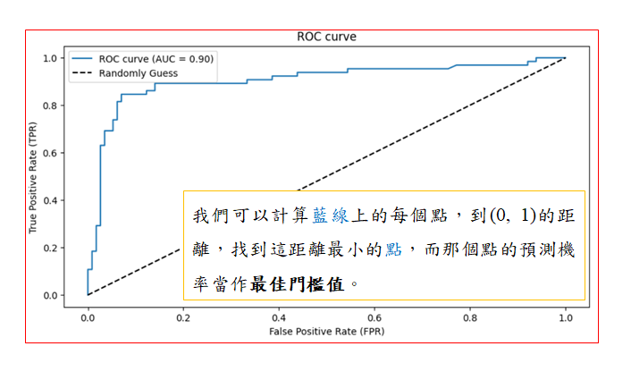
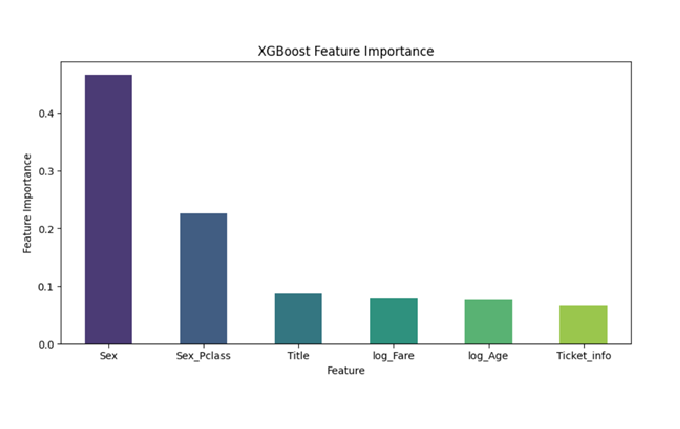
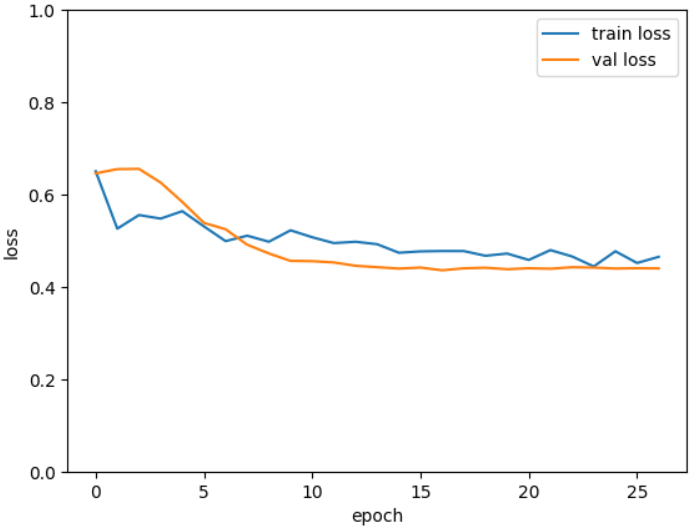

專案背景
在這個專案中，使用了多種機器學習算法來預測房價，包括 Logistic Regression、Random Forest 和 XGBoost 分類樹。最終，我們利用 DNN 嘗試提升預測的準確性。
數據集介紹
使用的數據集的特徵有 11 個，891 筆樣本，經過特徵工程，採用以下特徵:
特徵類別:
- 1. 性別: Sex
- 2. 性別與艙等: Sex_Pclass
- 3. 稱謂: Title
- 4. 年紀取log: log_Age
- 5. 票價取log: log_Fare
- 6. 住的區域: Ticket_info
前處理後，用以上6個特徵，712筆train data、179筆test data進行modeling。
模型評估
XGBoost 在這裡是最好的模型，accuracy 與 F1-score 都是89%，AUC來到90%，且模型沒有特別明顯的偏好。

Confusion Matrix

ROC AUC curve
通常，只要模型沒有太大的偏好(0分的好、但1分得不好)這種情況，或者特殊需求，accuracy和F1-score大致能決定一個模型分類能力的好壞。
ROC curve和計算AUC(藍線以下的面積):
- 1. 幫助我們尋找最佳分類門檻值，而不是預設的0.5；
- 2. 比較不同模型間的分類能力。

Feature Importance
解釋特徵重要性:
- 1. 以結果來說，影響是否存活最大的特徵有: Sex(性別)、 (性別與艙等)。
- 2. 在線性回歸中，這兩個明顯有多重共線性，可以只取一個，或者用Ridge、Lasso縮小其中一個的影響；
- 3. 在隨機森林與XGB這種樹方法，同時放入2個，可讓模型自行選擇哪個訊息增益較大的特徵。
- 4. 這裡特徵本就不多，多放一點交互作用項，有助於提升分類能力。
結論
這個專案，最後使用DNN結果並不會比較好，我想是data size太小，通常5000筆以下的問題DNN難以超越XG Boost，以結果來看cross entropy loss到0.5就幾乎平坦，不再下降，明顯是underfit。

Cross Entropy Loss